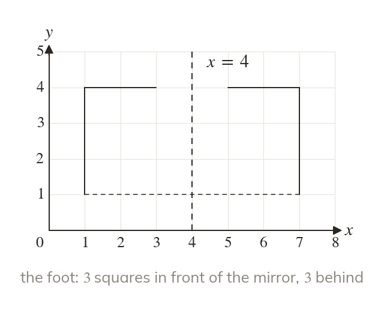
The same distance on the other side
Each point lands as far from the mirror, on the other side. The image faces the other way.
A kaleidoscope is built from reflections, and a wheel or a clock hand moves by rotation. A mirror line fixes one; a centre, an angle and a direction fix the other.
Work down the page at your own pace. Write every answer in your book first, then click to check it.
Read each card, then follow the worked examples one step at a time.

Each point lands as far from the mirror, on the other side. The image faces the other way.
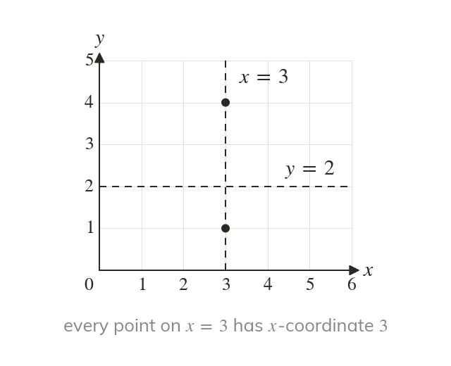
A vertical mirror line is = a number. A horizontal one is = a number. Every point on it shares that coordinate.
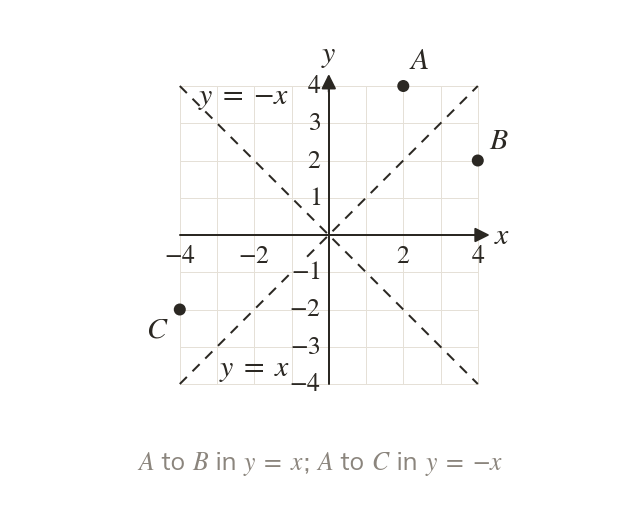
Reflecting in swaps a point's coordinates. Reflecting in swaps them and changes both signs.
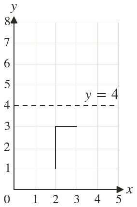
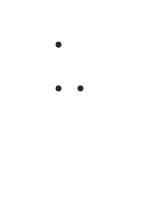
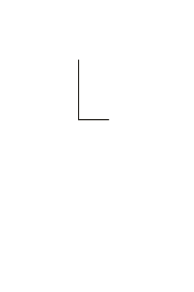
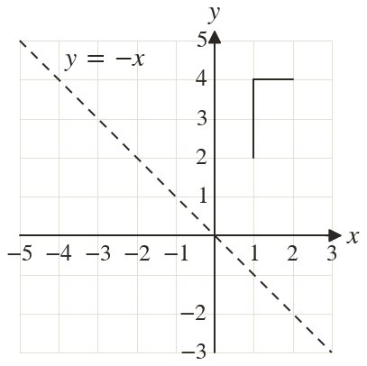
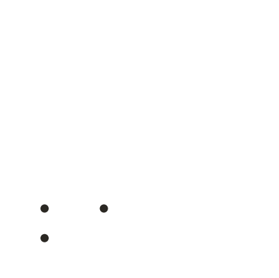
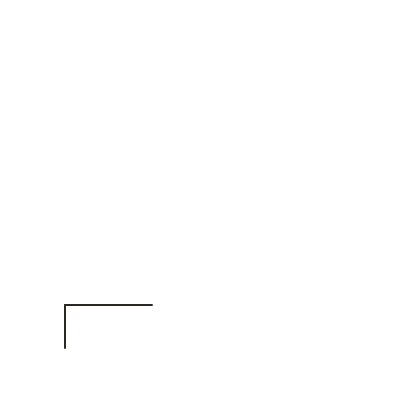
Pick an answer. If it's wrong, the feedback tells you which mistake it was.
Printable worksheet — the questions with room to work.
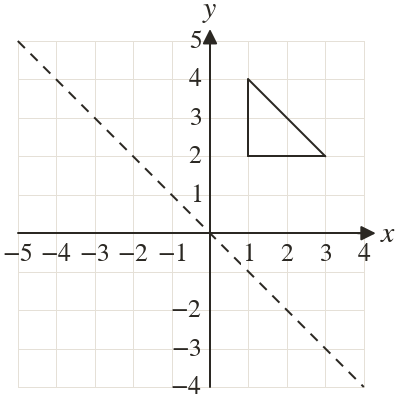
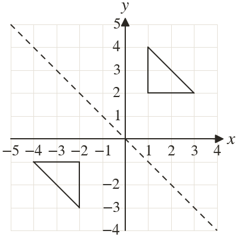
Read each card, then follow the worked examples one step at a time.

A rotation turns every point about one fixed centre. Each point keeps its distance from the centre.
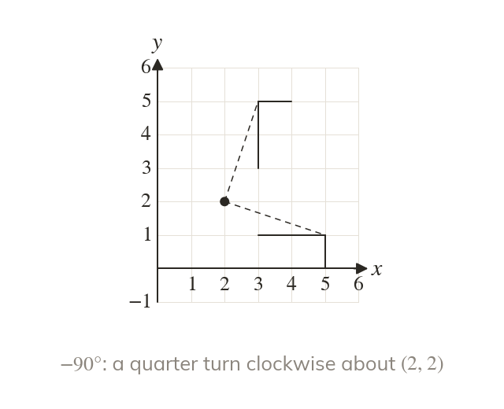
Anticlockwise is a positive angle and clockwise a negative one. So is a quarter turn clockwise.
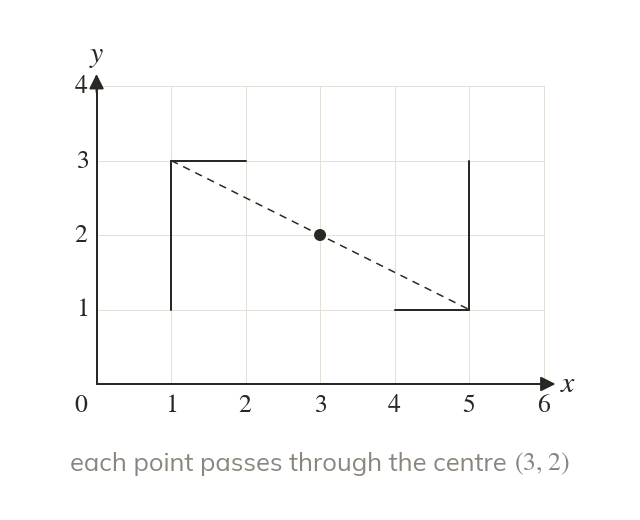
In a half turn, each point goes straight through the centre. Its image is the same distance beyond.
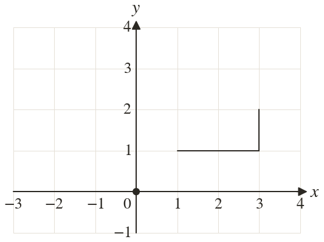
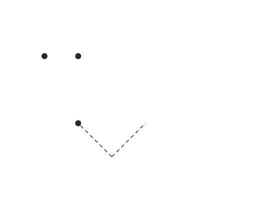
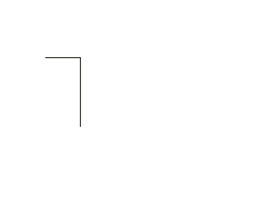
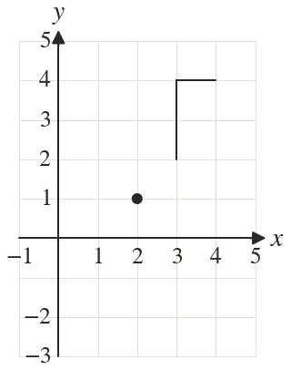
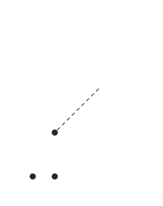
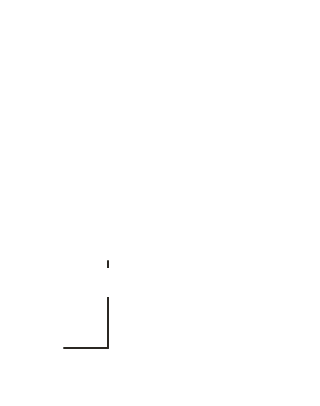
Pick an answer. If it's wrong, the feedback tells you which mistake it was.
Printable worksheet — the questions with room to work.
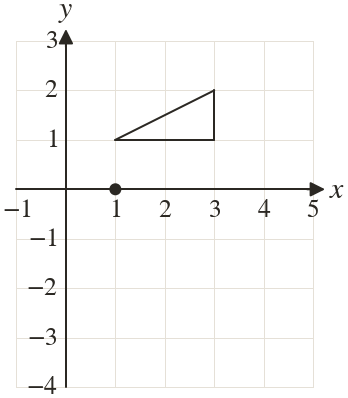
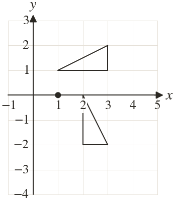
Finished? Next lesson: 10H.12.3 Enlargement by a Positive Scale Factor.
For each skill, tap the one that is true for you today. Your Revise pages start with anything you mark Not yet.
Your ratings are saved on this device only.
Log in, then search for a code to practise that skill.
Videos, worksheets and more on each part of this lesson.